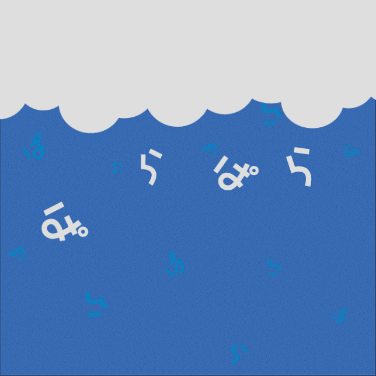

A word that describes the appearance of small objects being scattered or the appearance of a series of light sounds being heard.
It starts to rain little by little.
The fried rice at this restaurant is fluffy and very delicious.
Flipping through the album, I look back on my memories.